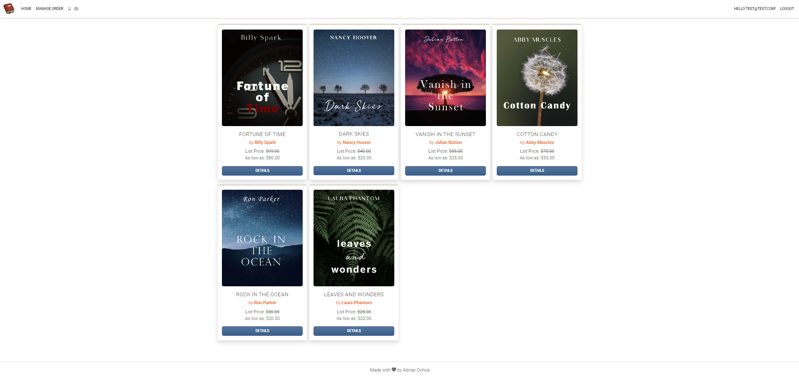
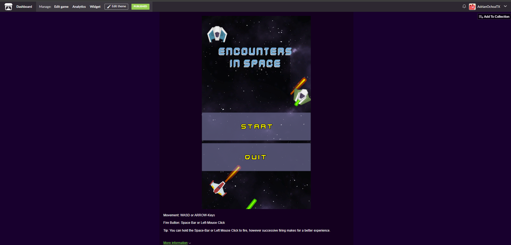
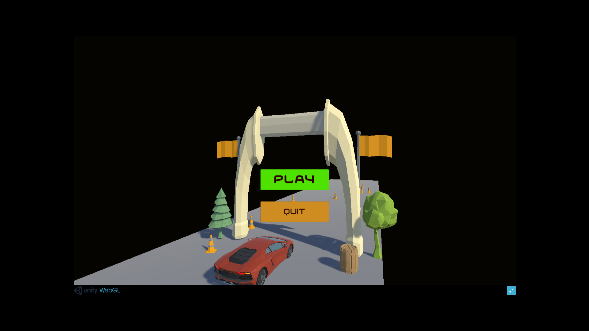

.NET 8
I developed a comprehensive surplus bookstore web application that allows users to simulate bulk book purchases.
This application, built using the .NET 8 framework in Visual Studio and utilizes the MVC architecture to ensure a scalable design.
I successfully deployed the live application on Azure, demonstrating my expertise in both .NET development and cloud service deployment.


I developed a scalable application using the Unity engine and C# that can be readily played on PC.
The application features a Damage Script to handle damage dealt and received, a Shooting script enabling both enemies and the player to shoot.
To manage gameplay intensity, I designed an Enemy Spawning script that dynamically controls enemy waves, integrating seamlessly with the WaveConfig script, which I engineered to precisely dictate spawn locations and enemy path trajectories.
I also created a responsive Player script to ensure smooth and intuitive player movement.
Finally, I implemented a comprehensive Scorekeeping script that accurately tracks and records high scores, displayed in an engaging game over menu.
This project demonstrates my deep understanding of game mechanics, scripting, and scalable game design.

I developed a straightforward mobile game called Runaway Car using the Unity engine and C#. The game features intuitive gameplay designed for quick, engaging experiences.
The Car script handles vehicle movement using the phone's touch controls, providing a responsive and accessible driving experience.
To progress through the game, the Finish script seamlessly loads the next level upon reaching the finish line.
Additionally, I implemented an Obstacle Movement script that uses coroutines to create dynamic obstacles, moving along the x or z axis, adding challenge and variety to each race.
This project showcases my ability to develop simple mobile games with smooth gameplay mechanics.